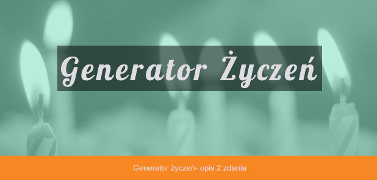
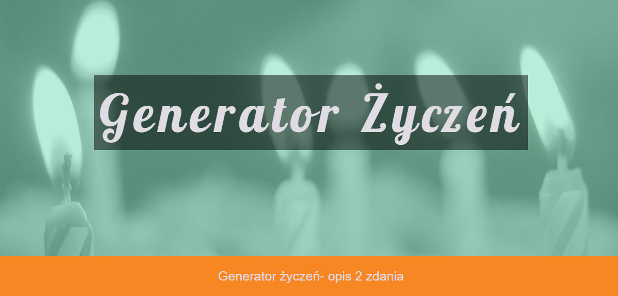

Entuzjastka nowych technologii, zaczynając od komputerów kończąc na systemach audio. Osoba o wielu
zainteresowaniach. Fanka komiksów i animacji zarówno japońskich oraz amerykańskich. W dzień grafik i edytor,
pod osłoną nocy rysownik, gracz a także maratończyk seriali na Netflixie. Uwielbia posiadówki nad grami
planszowymi. W wolnym czasie dłubie w elektronice a swoich sił próbuje w grze na basie. Jej główną cechą
jest upór dzięki któremu toruje sobie drogę do celu. Razem z zespołem FantastycznaCzwórka pracuję nad
projektem: "Generator Życzeń".


 
